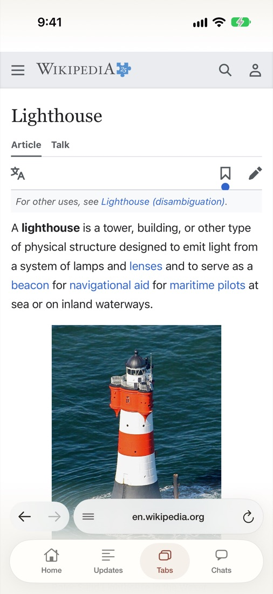
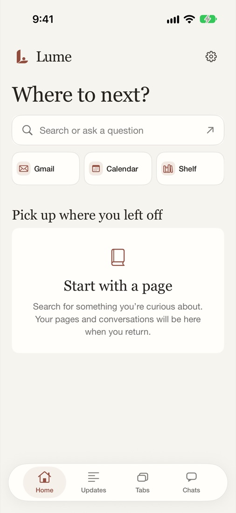
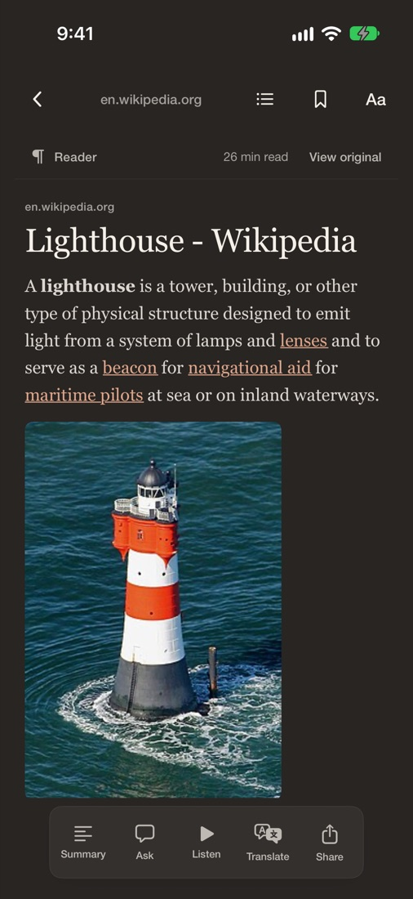
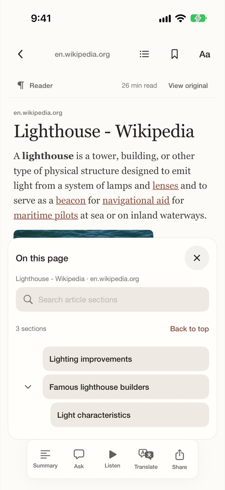
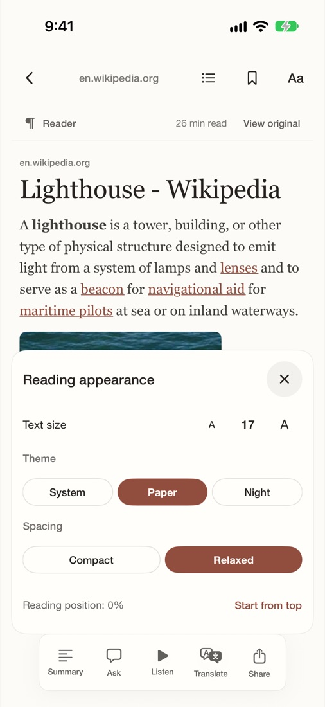
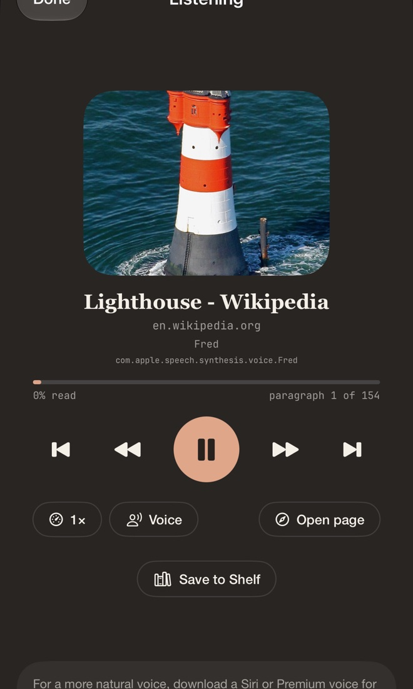

LUME is a web browser for iPhone. A quiet reader, natural voices that read articles aloud, and an assistant that only works where you let it.
Join the beta on TestFlight Free. Requires iOS 27.


Open any article in a clean reading view. Choose Paper or Night, set the text size and spacing, and jump around with an outline of the page.


Turn an article into audio with natural English voices that run on your iPhone. Download a voice once and it works offline.

LUME's assistant stays out of the way until you call on it, and uses the AI provider you choose with your own key.
Ask a question about the page you're on and see the exact passages the answer comes from.
Get the gist of a long article in one tap.
Compare two to six open pages side by side, with links back to each.
Tell LUME what you care about on a page, and get notified when it changes.
Let the assistant work in a tab you choose. A banner lets you stop it or take the tab back at any time.
AI features are switched off in private tabs, so nothing from them is sent.
The everyday things work the way you expect.
Pin tabs, sort them into named groups, and search across everything you have open.
Hides the ads and cookie banners it detects, and tells you how many. When hiding isn't enough, it picks the most private cookie choice.
Separate cookies, no history, and the page is never sent to AI.
Folders, plus import and export as a standard bookmarks file.
Find a page you saw last week, or bring back a tab you just closed.
Files save to the Files app, with a list you can search.
Search for words on any page.
Choose Ask or Block for each site's camera and microphone.
Search Google from the address bar. One tap hides sponsored results.
LUME has no servers and no accounts.
Tabs, history and settings are stored on your device. No analytics, no ads.
AI features use a provider you choose. Your key stays in your iPhone's Keychain.
Nothing from a private tab is sent to an AI model.